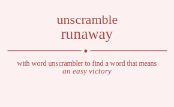

The word found after unscrambling runaway means that an easy victory, someone who flees from an uncongenial situation, completely out of control, .

The word found after unscrambling runaway means that an easy victory, someone who flees from an uncongenial situation, completely out of control, .
You can also find solutions for different combinations of letters in runaway like runaway runawya runaawy runaayw runaywa runayaw runwaay runwaya runwaay runwaya runwyaa runwyaa runaawy runaayw runaway runawya runayaw runaywa runyawa runyaaw runywaa runywaa runyaaw runyawa ruanway ruanwya ruanawy ruanayw ruanywa ruanyaw ruawnay ruawnya ruawany ruawayn ruawyna ruawyan ruaanwy ruaanyw ruaawny ruaawyn ruaaynw ruaaywn ruaynwa ruaynaw ruaywna ruaywan ruayanw ruayawn ruwnaay ruwnaya ruwnaay ruwnaya ruwnyaa ruwnyaa ruwanay ruwanya ruwaany ruwaayn ruwayna ruwayan ruwanay ruwanya ruwaany ruwaayn ruwayna ruwayan ruwynaa ruwynaa ruwyana ruwyaan ruwyana ruwyaan ruanawy ruanayw ruanway ruanwya ruanyaw ruanywa ruaanwy ruaanyw ruaawny ruaawyn ruaaynw ruaaywn ruawnay ruawnya ruawany ruawayn ruawyna ruawyan ruaynaw ruaynwa ruayanw ruayawn ruaywna ruaywan ruynawa ruynaaw ruynwaa ruynwaa ruynaaw ruynawa ruyanwa ruyanaw ruyawna ruyawan ruyaanw ruyaawn ruywnaa ruywnaa ruywana ruywaan ruywana ruywaan ruyanaw ruyanwa ruyaanw ruyaawn ruyawna ruyawan rnuaway rnuawya rnuaawy rnuaayw rnuaywa rnuayaw rnuwaay rnuwaya rnuwaay rnuwaya rnuwyaa rnuwyaa rnuaawy rnuaayw rnuaway rnuawya rnuayaw rnuaywa rnuyawa rnuyaaw rnuywaa rnuywaa rnuyaaw rnuyawa rnauway rnauwya rnauawy rnauayw rnauywa rnauyaw rnawuay rnawuya rnawauy rnawayu rnawyua rnawyau rnaauwy rnaauyw rnaawuy rnaawyu rnaayuw rnaaywu rnayuwa rnayuaw rnaywua rnaywau rnayauw rnayawu rnwuaay rnwuaya rnwuaay rnwuaya rnwuyaa rnwuyaa rnwauay rnwauya rnwaauy rnwaayu rnwayua rnwayau rnwauay rnwauya rnwaauy rnwaayu rnwayua rnwayau rnwyuaa rnwyuaa rnwyaua rnwyaau rnwyaua rnwyaau rnauawy rnauayw rnauway rnauwya rnauyaw rnauywa rnaauwy rnaauyw rnaawuy rnaawyu rnaayuw rnaaywu rnawuay rnawuya rnawauy rnawayu rnawyua rnawyau rnayuaw rnayuwa rnayauw rnayawu rnaywua rnaywau rnyuawa rnyuaaw rnyuwaa rnyuwaa rnyuaaw rnyuawa rnyauwa rnyauaw rnyawua rnyawau rnyaauw rnyaawu rnywuaa rnywuaa rnywaua rnywaau rnywaua rnywaau rnyauaw rnyauwa rnyaauw rnyaawu rnyawua rnyawau raunway raunwya raunawy raunayw raunywa raunyaw rauwnay rauwnya rauwany rauwayn rauwyna rauwyan rauanwy rauanyw rauawny rauawyn rauaynw rauaywn rauynwa rauynaw rauywna rauywan rauyanw rauyawn ranuway ranuwya ranuawy ranuayw ranuywa ranuyaw ranwuay ranwuya ranwauy ranwayu ranwyua ranwyau ranauwy ranauyw ranawuy ranawyu ranayuw ranaywu ranyuwa ranyuaw ranywua ranywau ranyauw ranyawu rawunay rawunya rawuany rawuayn rawuyna rawuyan rawnuay rawnuya rawnauy rawnayu rawnyua rawnyau rawauny rawauyn rawanuy rawanyu rawayun rawaynu rawyuna rawyuan rawynua rawynau rawyaun rawyanu raaunwy raaunyw raauwny raauwyn raauynw raauywn raanuwy raanuyw raanwuy raanwyu raanyuw raanywu raawuny raawuyn raawnuy raawnyu raawyun raawynu raayunw raayuwn raaynuw raaynwu raaywun raaywnu rayunwa rayunaw rayuwna rayuwan rayuanw rayuawn raynuwa raynuaw raynwua raynwau raynauw raynawu raywuna raywuan raywnua raywnau raywaun raywanu rayaunw rayauwn rayanuw rayanwu rayawun rayawnu rwunaay rwunaya rwunaay rwunaya rwunyaa rwunyaa rwuanay rwuanya rwuaany rwuaayn rwuayna rwuayan rwuanay rwuanya rwuaany rwuaayn rwuayna rwuayan rwuynaa rwuynaa rwuyana rwuyaan rwuyana rwuyaan rwnuaay rwnuaya rwnuaay rwnuaya rwnuyaa rwnuyaa rwnauay rwnauya rwnaauy rwnaayu rwnayua rwnayau rwnauay rwnauya rwnaauy rwnaayu rwnayua rwnayau rwnyuaa rwnyuaa rwnyaua rwnyaau rwnyaua rwnyaau rwaunay rwaunya rwauany rwauayn rwauyna rwauyan rwanuay rwanuya rwanauy rwanayu rwanyua rwanyau rwaauny rwaauyn rwaanuy rwaanyu rwaayun rwaaynu rwayuna rwayuan rwaynua rwaynau rwayaun rwayanu rwaunay rwaunya rwauany rwauayn rwauyna rwauyan rwanuay rwanuya rwanauy rwanayu rwanyua rwanyau rwaauny rwaauyn rwaanuy rwaanyu rwaayun rwaaynu rwayuna rwayuan rwaynua rwaynau rwayaun rwayanu rwyunaa rwyunaa rwyuana rwyuaan rwyuana rwyuaan rwynuaa rwynuaa rwynaua rwynaau rwynaua rwynaau rwyauna rwyauan rwyanua rwyanau rwyaaun rwyaanu rwyauna rwyauan rwyanua rwyanau rwyaaun rwyaanu raunawy raunayw raunway raunwya raunyaw raunywa rauanwy rauanyw rauawny rauawyn rauaynw rauaywn rauwnay rauwnya rauwany rauwayn rauwyna rauwyan rauynaw rauynwa rauyanw rauyawn rauywna rauywan ranuawy ranuayw ranuway ranuwya ranuyaw ranuywa ranauwy ranauyw ranawuy ranawyu ranayuw ranaywu ranwuay ranwuya ranwauy ranwayu ranwyua ranwyau ranyuaw ranyuwa ranyauw ranyawu ranywua ranywau raaunwy raaunyw raauwny raauwyn raauynw raauywn raanuwy raanuyw raanwuy raanwyu raanyuw raanywu raawuny raawuyn raawnuy raawnyu raawyun raawynu raayunw raayuwn raaynuw raaynwu raaywun raaywnu rawunay rawunya rawuany rawuayn rawuyna rawuyan rawnuay rawnuya rawnauy rawnayu rawnyua rawnyau rawauny rawauyn rawanuy rawanyu rawayun rawaynu rawyuna rawyuan rawynua rawynau rawyaun rawyanu rayunaw rayunwa rayuanw rayuawn rayuwna rayuwan raynuaw raynuwa raynauw raynawu raynwua raynwau rayaunw rayauwn rayanuw rayanwu rayawun rayawnu raywuna raywuan raywnua raywnau raywaun raywanu ryunawa ryunaaw ryunwaa ryunwaa ryunaaw ryunawa ryuanwa ryuanaw ryuawna ryuawan ryuaanw ryuaawn ryuwnaa ryuwnaa ryuwana ryuwaan ryuwana ryuwaan ryuanaw ryuanwa ryuaanw ryuaawn ryuawna ryuawan rynuawa rynuaaw rynuwaa rynuwaa rynuaaw rynuawa rynauwa rynauaw rynawua rynawau rynaauw rynaawu rynwuaa rynwuaa rynwaua rynwaau rynwaua rynwaau rynauaw rynauwa rynaauw rynaawu rynawua rynawau ryaunwa ryaunaw ryauwna ryauwan ryauanw ryauawn ryanuwa ryanuaw ryanwua ryanwau ryanauw ryanawu ryawuna ryawuan ryawnua ryawnau ryawaun ryawanu ryaaunw ryaauwn ryaanuw ryaanwu ryaawun ryaawnu rywunaa rywunaa rywuana rywuaan rywuana rywuaan rywnuaa rywnuaa rywnaua rywnaau rywnaua rywnaau rywauna rywauan rywanua rywanau rywaaun rywaanu rywauna rywauan rywanua rywanau rywaaun rywaanu ryaunaw ryaunwa ryauanw ryauawn ryauwna ryauwan ryanuaw ryanuwa ryanauw ryanawu ryanwua ryanwau ryaaunw ryaauwn ryaanuw ryaanwu ryaawun ryaawnu ryawuna ryawuan ryawnua ryawnau ryawaun ryawanu urnaway urnawya urnaawy urnaayw urnaywa urnayaw urnwaay urnwaya urnwaay urnwaya urnwyaa urnwyaa urnaawy urnaayw urnaway urnawya urnayaw urnaywa urnyawa urnyaaw urnywaa urnywaa urnyaaw urnyawa uranway uranwya uranawy uranayw uranywa uranyaw urawnay urawnya urawany urawayn urawyna urawyan uraanwy uraanyw uraawny uraawyn uraaynw uraaywn uraynwa uraynaw uraywna uraywan urayanw urayawn urwnaay urwnaya urwnaay urwnaya urwnyaa urwnyaa urwanay urwanya urwaany urwaayn urwayna urwayan urwanay urwanya urwaany urwaayn urwayna urwayan urwynaa urwynaa urwyana urwyaan urwyana urwyaan uranawy uranayw uranway uranwya uranyaw uranywa uraanwy uraanyw uraawny uraawyn uraaynw uraaywn urawnay urawnya urawany urawayn urawyna urawyan uraynaw uraynwa urayanw urayawn uraywna uraywan urynawa urynaaw urynwaa urynwaa urynaaw urynawa uryanwa uryanaw uryawna uryawan uryaanw uryaawn urywnaa urywnaa urywana urywaan urywana urywaan uryanaw uryanwa uryaanw uryaawn uryawna uryawan unraway unrawya unraawy unraayw unraywa unrayaw unrwaay unrwaya unrwaay unrwaya unrwyaa unrwyaa unraawy unraayw unraway unrawya unrayaw unraywa unryawa unryaaw unrywaa unrywaa unryaaw unryawa unarway unarwya unarawy unarayw unarywa unaryaw unawray unawrya unawary unawayr unawyra unawyar unaarwy unaaryw unaawry unaawyr unaayrw unaaywr unayrwa unayraw unaywra unaywar unayarw unayawr unwraay unwraya unwraay unwraya unwryaa unwryaa unwaray unwarya unwaary unwaayr unwayra unwayar unwaray unwarya unwaary unwaayr unwayra unwayar unwyraa unwyraa unwyara unwyaar unwyara unwyaar unarawy unarayw unarway unarwya unaryaw unarywa unaarwy unaaryw unaawry unaawyr unaayrw unaaywr unawray unawrya unawary unawayr unawyra unawyar unayraw unayrwa unayarw unayawr unaywra unaywar unyrawa unyraaw unyrwaa unyrwaa unyraaw unyrawa unyarwa unyaraw unyawra unyawar unyaarw unyaawr unywraa unywraa unywara unywaar unywara unywaar unyaraw unyarwa unyaarw unyaawr unyawra unyawar uarnway uarnwya uarnawy uarnayw uarnywa uarnyaw uarwnay uarwnya uarwany uarwayn uarwyna uarwyan uaranwy uaranyw uarawny uarawyn uaraynw uaraywn uarynwa uarynaw uarywna uarywan uaryanw uaryawn uanrway uanrwya uanrawy uanrayw uanrywa uanryaw uanwray uanwrya uanwary uanwayr uanwyra uanwyar uanarwy uanaryw uanawry uanawyr uanayrw uanaywr uanyrwa uanyraw uanywra uanywar uanyarw uanyawr uawrnay uawrnya uawrany uawrayn uawryna uawryan uawnray uawnrya uawnary uawnayr uawnyra uawnyar uawarny uawaryn uawanry uawanyr uawayrn uawaynr uawyrna uawyran uawynra uawynar uawyarn uawyanr uaarnwy uaarnyw uaarwny uaarwyn uaarynw uaarywn uaanrwy uaanryw uaanwry uaanwyr uaanyrw uaanywr uaawrny uaawryn uaawnry uaawnyr uaawyrn uaawynr uaayrnw uaayrwn uaaynrw uaaynwr uaaywrn uaaywnr uayrnwa uayrnaw uayrwna uayrwan uayranw uayrawn uaynrwa uaynraw uaynwra uaynwar uaynarw uaynawr uaywrna uaywran uaywnra uaywnar uaywarn uaywanr uayarnw uayarwn uayanrw uayanwr uayawrn uayawnr uwrnaay uwrnaya uwrnaay uwrnaya uwrnyaa uwrnyaa uwranay uwranya uwraany uwraayn uwrayna uwrayan uwranay uwranya uwraany uwraayn uwrayna uwrayan uwrynaa uwrynaa uwryana uwryaan uwryana uwryaan uwnraay uwnraya uwnraay uwnraya uwnryaa uwnryaa uwnaray uwnarya uwnaary uwnaayr uwnayra uwnayar uwnaray uwnarya uwnaary uwnaayr uwnayra uwnayar uwnyraa uwnyraa uwnyara uwnyaar uwnyara uwnyaar uwarnay uwarnya uwarany uwarayn uwaryna uwaryan uwanray uwanrya uwanary uwanayr uwanyra uwanyar uwaarny uwaaryn uwaanry uwaanyr uwaayrn uwaaynr uwayrna uwayran uwaynra uwaynar uwayarn uwayanr uwarnay uwarnya uwarany uwarayn uwaryna uwaryan uwanray uwanrya uwanary uwanayr uwanyra uwanyar uwaarny uwaaryn uwaanry uwaanyr uwaayrn uwaaynr uwayrna uwayran uwaynra uwaynar uwayarn uwayanr uwyrnaa uwyrnaa uwyrana uwyraan uwyrana uwyraan uwynraa uwynraa uwynara uwynaar uwynara uwynaar uwyarna uwyaran uwyanra uwyanar uwyaarn uwyaanr uwyarna uwyaran uwyanra uwyanar uwyaarn uwyaanr uarnawy uarnayw uarnway uarnwya uarnyaw uarnywa uaranwy uaranyw uarawny uarawyn uaraynw uaraywn uarwnay uarwnya uarwany uarwayn uarwyna uarwyan uarynaw uarynwa uaryanw uaryawn uarywna uarywan uanrawy uanrayw uanrway uanrwya uanryaw uanrywa uanarwy uanaryw uanawry uanawyr uanayrw uanaywr uanwray uanwrya uanwary uanwayr uanwyra uanwyar uanyraw uanyrwa uanyarw uanyawr uanywra uanywar uaarnwy uaarnyw uaarwny uaarwyn uaarynw uaarywn uaanrwy uaanryw uaanwry uaanwyr uaanyrw uaanywr uaawrny uaawryn uaawnry uaawnyr uaawyrn uaawynr uaayrnw uaayrwn uaaynrw uaaynwr uaaywrn uaaywnr uawrnay uawrnya uawrany uawrayn uawryna uawryan uawnray uawnrya uawnary uawnayr uawnyra uawnyar uawarny uawaryn uawanry uawanyr uawayrn uawaynr uawyrna uawyran uawynra uawynar uawyarn uawyanr uayrnaw uayrnwa uayranw uayrawn uayrwna uayrwan uaynraw uaynrwa uaynarw uaynawr uaynwra uaynwar uayarnw uayarwn uayanrw uayanwr uayawrn uayawnr uaywrna uaywran uaywnra uaywnar uaywarn uaywanr uyrnawa uyrnaaw uyrnwaa uyrnwaa uyrnaaw uyrnawa uyranwa uyranaw uyrawna uyrawan uyraanw uyraawn uyrwnaa uyrwnaa uyrwana uyrwaan uyrwana uyrwaan uyranaw uyranwa uyraanw uyraawn uyrawna uyrawan uynrawa uynraaw uynrwaa uynrwaa uynraaw uynrawa uynarwa uynaraw uynawra uynawar uynaarw uynaawr uynwraa uynwraa uynwara uynwaar uynwara uynwaar uynaraw uynarwa uynaarw uynaawr uynawra uynawar uyarnwa uyarnaw uyarwna uyarwan uyaranw uyarawn uyanrwa uyanraw uyanwra uyanwar uyanarw uyanawr uyawrna uyawran uyawnra uyawnar uyawarn uyawanr uyaarnw uyaarwn uyaanrw uyaanwr uyaawrn uyaawnr uywrnaa uywrnaa uywrana uywraan uywrana uywraan uywnraa uywnraa uywnara uywnaar uywnara uywnaar uywarna uywaran uywanra uywanar uywaarn uywaanr uywarna uywaran uywanra uywanar uywaarn uywaanr uyarnaw uyarnwa uyaranw uyarawn uyarwna uyarwan uyanraw uyanrwa uyanarw uyanawr uyanwra uyanwar uyaarnw uyaarwn uyaanrw uyaanwr uyaawrn uyaawnr uyawrna uyawran uyawnra uyawnar uyawarn uyawanr nruaway nruawya nruaawy nruaayw nruaywa nruayaw nruwaay nruwaya nruwaay nruwaya nruwyaa nruwyaa nruaawy nruaayw nruaway nruawya nruayaw nruaywa nruyawa nruyaaw nruywaa nruywaa nruyaaw nruyawa nrauway nrauwya nrauawy nrauayw nrauywa nrauyaw nrawuay nrawuya nrawauy nrawayu nrawyua nrawyau nraauwy nraauyw nraawuy nraawyu nraayuw nraaywu nrayuwa nrayuaw nraywua nraywau nrayauw nrayawu nrwuaay nrwuaya nrwuaay nrwuaya nrwuyaa nrwuyaa nrwauay nrwauya nrwaauy nrwaayu nrwayua nrwayau nrwauay nrwauya nrwaauy nrwaayu nrwayua nrwayau nrwyuaa nrwyuaa nrwyaua nrwyaau nrwyaua nrwyaau nrauawy nrauayw nrauway nrauwya nrauyaw nrauywa nraauwy nraauyw nraawuy nraawyu nraayuw nraaywu nrawuay nrawuya nrawauy nrawayu nrawyua nrawyau nrayuaw nrayuwa nrayauw nrayawu nraywua nraywau nryuawa nryuaaw nryuwaa nryuwaa nryuaaw nryuawa nryauwa nryauaw nryawua nryawau nryaauw nryaawu nrywuaa nrywuaa nrywaua nrywaau nrywaua nrywaau nryauaw nryauwa nryaauw nryaawu nryawua nryawau nuraway nurawya nuraawy nuraayw nuraywa nurayaw nurwaay nurwaya nurwaay nurwaya nurwyaa nurwyaa nuraawy nuraayw nuraway nurawya nurayaw nuraywa nuryawa nuryaaw nurywaa nurywaa nuryaaw nuryawa nuarway nuarwya nuarawy nuarayw nuarywa nuaryaw nuawray nuawrya nuawary nuawayr nuawyra nuawyar nuaarwy nuaaryw nuaawry nuaawyr nuaayrw nuaaywr nuayrwa nuayraw nuaywra nuaywar nuayarw nuayawr nuwraay nuwraya nuwraay nuwraya nuwryaa nuwryaa nuwaray nuwarya nuwaary nuwaayr nuwayra nuwayar nuwaray nuwarya nuwaary nuwaayr nuwayra nuwayar nuwyraa nuwyraa nuwyara nuwyaar nuwyara nuwyaar nuarawy nuarayw nuarway nuarwya nuaryaw nuarywa nuaarwy nuaaryw nuaawry nuaawyr nuaayrw nuaaywr nuawray nuawrya nuawary nuawayr nuawyra nuawyar nuayraw nuayrwa nuayarw nuayawr nuaywra nuaywar nuyrawa nuyraaw nuyrwaa nuyrwaa nuyraaw nuyrawa nuyarwa nuyaraw nuyawra nuyawar nuyaarw nuyaawr nuywraa nuywraa nuywara nuywaar nuywara nuywaar nuyaraw nuyarwa nuyaarw nuyaawr nuyawra nuyawar naruway naruwya naruawy naruayw naruywa naruyaw narwuay narwuya narwauy narwayu narwyua narwyau narauwy narauyw narawuy narawyu narayuw naraywu naryuwa naryuaw narywua narywau naryauw naryawu naurway naurwya naurawy naurayw naurywa nauryaw nauwray nauwrya nauwary nauwayr nauwyra nauwyar nauarwy nauaryw nauawry nauawyr nauayrw nauaywr nauyrwa nauyraw nauywra nauywar nauyarw nauyawr nawruay nawruya nawrauy nawrayu nawryua nawryau nawuray nawurya nawuary nawuayr nawuyra nawuyar nawaruy nawaryu nawaury nawauyr nawayru nawayur nawyrua nawyrau nawyura nawyuar nawyaru nawyaur naaruwy naaruyw naarwuy naarwyu naaryuw naarywu naaurwy naauryw naauwry naauwyr naauyrw naauywr naawruy naawryu naawury naawuyr naawyru naawyur naayruw naayrwu naayurw naayuwr naaywru naaywur nayruwa nayruaw nayrwua nayrwau nayrauw nayrawu nayurwa nayuraw nayuwra nayuwar nayuarw nayuawr naywrua naywrau naywura naywuar naywaru naywaur nayaruw nayarwu nayaurw nayauwr nayawru nayawur nwruaay nwruaya nwruaay nwruaya nwruyaa nwruyaa nwrauay nwrauya nwraauy nwraayu nwrayua nwrayau nwrauay nwrauya nwraauy nwraayu nwrayua nwrayau nwryuaa nwryuaa nwryaua nwryaau nwryaua nwryaau nwuraay nwuraya nwuraay nwuraya nwuryaa nwuryaa nwuaray nwuarya nwuaary nwuaayr nwuayra nwuayar nwuaray nwuarya nwuaary nwuaayr nwuayra nwuayar nwuyraa nwuyraa nwuyara nwuyaar nwuyara nwuyaar nwaruay nwaruya nwarauy nwarayu nwaryua nwaryau nwauray nwaurya nwauary nwauayr nwauyra nwauyar nwaaruy nwaaryu nwaaury nwaauyr nwaayru nwaayur nwayrua nwayrau nwayura nwayuar nwayaru nwayaur nwaruay nwaruya nwarauy nwarayu nwaryua nwaryau nwauray nwaurya nwauary nwauayr nwauyra nwauyar nwaaruy nwaaryu nwaaury nwaauyr nwaayru nwaayur nwayrua nwayrau nwayura nwayuar nwayaru nwayaur nwyruaa nwyruaa nwyraua nwyraau nwyraua nwyraau nwyuraa nwyuraa nwyuara nwyuaar nwyuara nwyuaar nwyarua nwyarau nwyaura nwyauar nwyaaru nwyaaur nwyarua nwyarau nwyaura nwyauar nwyaaru nwyaaur naruawy naruayw naruway naruwya naruyaw naruywa narauwy narauyw narawuy narawyu narayuw naraywu narwuay narwuya narwauy narwayu narwyua narwyau naryuaw naryuwa naryauw naryawu narywua narywau naurawy naurayw naurway naurwya nauryaw naurywa nauarwy nauaryw nauawry nauawyr nauayrw nauaywr nauwray nauwrya nauwary nauwayr nauwyra nauwyar nauyraw nauyrwa nauyarw nauyawr nauywra nauywar naaruwy naaruyw naarwuy naarwyu naaryuw naarywu naaurwy naauryw naauwry naauwyr naauyrw naauywr naawruy naawryu naawury naawuyr naawyru naawyur naayruw naayrwu naayurw naayuwr naaywru naaywur nawruay nawruya nawrauy nawrayu nawryua nawryau nawuray nawurya nawuary nawuayr nawuyra nawuyar nawaruy nawaryu nawaury nawauyr nawayru nawayur nawyrua nawyrau nawyura nawyuar nawyaru nawyaur nayruaw nayruwa nayrauw nayrawu nayrwua nayrwau nayuraw nayurwa nayuarw nayuawr nayuwra nayuwar nayaruw nayarwu nayaurw nayauwr nayawru nayawur naywrua naywrau naywura naywuar naywaru naywaur nyruawa nyruaaw nyruwaa nyruwaa nyruaaw nyruawa nyrauwa nyrauaw nyrawua nyrawau nyraauw nyraawu nyrwuaa nyrwuaa nyrwaua nyrwaau nyrwaua nyrwaau nyrauaw nyrauwa nyraauw nyraawu nyrawua nyrawau nyurawa nyuraaw nyurwaa nyurwaa nyuraaw nyurawa nyuarwa nyuaraw nyuawra nyuawar nyuaarw nyuaawr nyuwraa nyuwraa nyuwara nyuwaar nyuwara nyuwaar nyuaraw nyuarwa nyuaarw nyuaawr nyuawra nyuawar nyaruwa nyaruaw nyarwua nyarwau nyarauw nyarawu nyaurwa nyauraw nyauwra nyauwar nyauarw nyauawr nyawrua nyawrau nyawura nyawuar nyawaru nyawaur nyaaruw nyaarwu nyaaurw nyaauwr nyaawru nyaawur nywruaa nywruaa nywraua nywraau nywraua nywraau nywuraa nywuraa nywuara nywuaar nywuara nywuaar nywarua nywarau nywaura nywauar nywaaru nywaaur nywarua nywarau nywaura nywauar nywaaru nywaaur nyaruaw nyaruwa nyarauw nyarawu nyarwua nyarwau nyauraw nyaurwa nyauarw nyauawr nyauwra nyauwar nyaaruw nyaarwu nyaaurw nyaauwr nyaawru nyaawur nyawrua nyawrau nyawura nyawuar nyawaru nyawaur arunway arunwya arunawy arunayw arunywa arunyaw aruwnay aruwnya aruwany aruwayn aruwyna aruwyan aruanwy aruanyw aruawny aruawyn aruaynw aruaywn aruynwa aruynaw aruywna aruywan aruyanw aruyawn arnuway arnuwya arnuawy arnuayw arnuywa arnuyaw arnwuay arnwuya arnwauy arnwayu arnwyua arnwyau arnauwy arnauyw arnawuy arnawyu arnayuw arnaywu arnyuwa arnyuaw arnywua arnywau arnyauw arnyawu arwunay arwunya arwuany arwuayn arwuyna arwuyan arwnuay arwnuya arwnauy arwnayu arwnyua arwnyau arwauny arwauyn arwanuy arwanyu arwayun arwaynu arwyuna arwyuan arwynua arwynau arwyaun arwyanu araunwy araunyw arauwny arauwyn arauynw arauywn aranuwy aranuyw aranwuy aranwyu aranyuw aranywu arawuny arawuyn arawnuy arawnyu arawyun arawynu arayunw arayuwn araynuw araynwu araywun araywnu aryunwa aryunaw aryuwna aryuwan aryuanw aryuawn arynuwa arynuaw arynwua arynwau arynauw arynawu arywuna arywuan arywnua arywnau arywaun arywanu aryaunw aryauwn aryanuw aryanwu aryawun aryawnu aurnway aurnwya aurnawy aurnayw aurnywa aurnyaw aurwnay aurwnya aurwany aurwayn aurwyna aurwyan auranwy auranyw aurawny aurawyn auraynw auraywn aurynwa aurynaw aurywna aurywan auryanw auryawn aunrway aunrwya aunrawy aunrayw aunrywa aunryaw aunwray aunwrya aunwary aunwayr aunwyra aunwyar aunarwy aunaryw aunawry aunawyr aunayrw aunaywr aunyrwa aunyraw aunywra aunywar aunyarw aunyawr auwrnay auwrnya auwrany auwrayn auwryna auwryan auwnray auwnrya auwnary auwnayr auwnyra auwnyar auwarny auwaryn auwanry auwanyr auwayrn auwaynr auwyrna auwyran auwynra auwynar auwyarn auwyanr auarnwy auarnyw auarwny auarwyn auarynw auarywn auanrwy auanryw auanwry auanwyr auanyrw auanywr auawrny auawryn auawnry auawnyr auawyrn auawynr auayrnw auayrwn auaynrw auaynwr auaywrn auaywnr auyrnwa auyrnaw auyrwna auyrwan auyranw auyrawn auynrwa auynraw auynwra auynwar auynarw auynawr auywrna auywran auywnra auywnar auywarn auywanr auyarnw auyarwn auyanrw auyanwr auyawrn auyawnr anruway anruwya anruawy anruayw anruywa anruyaw anrwuay anrwuya anrwauy anrwayu anrwyua anrwyau anrauwy anrauyw anrawuy anrawyu anrayuw anraywu anryuwa anryuaw anrywua anrywau anryauw anryawu anurway anurwya anurawy anurayw anurywa anuryaw anuwray anuwrya anuwary anuwayr anuwyra anuwyar anuarwy anuaryw anuawry anuawyr anuayrw anuaywr anuyrwa anuyraw anuywra anuywar anuyarw anuyawr anwruay anwruya anwrauy anwrayu anwryua anwryau anwuray anwurya anwuary anwuayr anwuyra anwuyar anwaruy anwaryu anwaury anwauyr anwayru anwayur anwyrua anwyrau anwyura anwyuar anwyaru anwyaur anaruwy anaruyw anarwuy anarwyu anaryuw anarywu anaurwy anauryw anauwry anauwyr anauyrw anauywr anawruy anawryu anawury anawuyr anawyru anawyur anayruw anayrwu anayurw anayuwr anaywru anaywur anyruwa anyruaw anyrwua anyrwau anyrauw anyrawu anyurwa anyuraw anyuwra anyuwar anyuarw anyuawr anywrua anywrau anywura anywuar anywaru anywaur anyaruw anyarwu anyaurw anyauwr anyawru anyawur awrunay awrunya awruany awruayn awruyna awruyan awrnuay awrnuya awrnauy awrnayu awrnyua awrnyau awrauny awrauyn awranuy awranyu awrayun awraynu awryuna awryuan awrynua awrynau awryaun awryanu awurnay awurnya awurany awurayn awuryna awuryan awunray awunrya awunary awunayr awunyra awunyar awuarny awuaryn awuanry awuanyr awuayrn awuaynr awuyrna awuyran awuynra awuynar awuyarn awuyanr awnruay awnruya awnrauy awnrayu awnryua awnryau awnuray awnurya awnuary awnuayr awnuyra awnuyar awnaruy awnaryu awnaury awnauyr awnayru awnayur awnyrua awnyrau awnyura awnyuar awnyaru awnyaur awaruny awaruyn awarnuy awarnyu awaryun awarynu awaurny awauryn awaunry awaunyr awauyrn awauynr awanruy awanryu awanury awanuyr awanyru awanyur awayrun awayrnu awayurn awayunr awaynru awaynur awyruna awyruan awyrnua awyrnau awyraun awyranu awyurna awyuran awyunra awyunar awyuarn awyuanr awynrua awynrau awynura awynuar awynaru awynaur awyarun awyarnu awyaurn awyaunr awyanru awyanur aarunwy aarunyw aaruwny aaruwyn aaruynw aaruywn aarnuwy aarnuyw aarnwuy aarnwyu aarnyuw aarnywu aarwuny aarwuyn aarwnuy aarwnyu aarwyun aarwynu aaryunw aaryuwn aarynuw aarynwu aarywun aarywnu aaurnwy aaurnyw aaurwny aaurwyn aaurynw aaurywn aaunrwy aaunryw aaunwry aaunwyr aaunyrw aaunywr aauwrny aauwryn aauwnry aauwnyr aauwyrn aauwynr aauyrnw aauyrwn aauynrw aauynwr aauywrn aauywnr aanruwy aanruyw aanrwuy aanrwyu aanryuw aanrywu aanurwy aanuryw aanuwry aanuwyr aanuyrw aanuywr aanwruy aanwryu aanwury aanwuyr aanwyru aanwyur aanyruw aanyrwu aanyurw aanyuwr aanywru aanywur aawruny aawruyn aawrnuy aawrnyu aawryun aawrynu aawurny aawuryn aawunry aawunyr aawuyrn aawuynr aawnruy aawnryu aawnury aawnuyr aawnyru aawnyur aawyrun aawyrnu aawyurn aawyunr aawynru aawynur aayrunw aayruwn aayrnuw aayrnwu aayrwun aayrwnu aayurnw aayurwn aayunrw aayunwr aayuwrn aayuwnr aaynruw aaynrwu aaynurw aaynuwr aaynwru aaynwur aaywrun aaywrnu aaywurn aaywunr aaywnru aaywnur ayrunwa ayrunaw ayruwna ayruwan ayruanw ayruawn ayrnuwa ayrnuaw ayrnwua ayrnwau ayrnauw ayrnawu ayrwuna ayrwuan ayrwnua ayrwnau ayrwaun ayrwanu ayraunw ayrauwn ayranuw ayranwu ayrawun ayrawnu ayurnwa ayurnaw ayurwna ayurwan ayuranw ayurawn ayunrwa ayunraw ayunwra ayunwar ayunarw ayunawr ayuwrna ayuwran ayuwnra ayuwnar ayuwarn ayuwanr ayuarnw ayuarwn ayuanrw ayuanwr ayuawrn ayuawnr aynruwa aynruaw aynrwua aynrwau aynrauw aynrawu aynurwa aynuraw aynuwra aynuwar aynuarw aynuawr aynwrua aynwrau aynwura aynwuar aynwaru aynwaur aynaruw aynarwu aynaurw aynauwr aynawru aynawur aywruna aywruan aywrnua aywrnau aywraun aywranu aywurna aywuran aywunra aywunar aywuarn aywuanr aywnrua aywnrau aywnura aywnuar aywnaru aywnaur aywarun aywarnu aywaurn aywaunr aywanru aywanur ayarunw ayaruwn ayarnuw ayarnwu ayarwun ayarwnu ayaurnw ayaurwn ayaunrw ayaunwr ayauwrn ayauwnr ayanruw ayanrwu ayanurw ayanuwr ayanwru ayanwur ayawrun ayawrnu ayawurn ayawunr ayawnru ayawnur wrunaay wrunaya wrunaay wrunaya wrunyaa wrunyaa wruanay wruanya wruaany wruaayn wruayna wruayan wruanay wruanya wruaany wruaayn wruayna wruayan wruynaa wruynaa wruyana wruyaan wruyana wruyaan wrnuaay wrnuaya wrnuaay wrnuaya wrnuyaa wrnuyaa wrnauay wrnauya wrnaauy wrnaayu wrnayua wrnayau wrnauay wrnauya wrnaauy wrnaayu wrnayua wrnayau wrnyuaa wrnyuaa wrnyaua wrnyaau wrnyaua wrnyaau wraunay wraunya wrauany wrauayn wrauyna wrauyan wranuay wranuya wranauy wranayu wranyua wranyau wraauny wraauyn wraanuy wraanyu wraayun wraaynu wrayuna wrayuan wraynua wraynau wrayaun wrayanu wraunay wraunya wrauany wrauayn wrauyna wrauyan wranuay wranuya wranauy wranayu wranyua wranyau wraauny wraauyn wraanuy wraanyu wraayun wraaynu wrayuna wrayuan wraynua wraynau wrayaun wrayanu wryunaa wryunaa wryuana wryuaan wryuana wryuaan wrynuaa wrynuaa wrynaua wrynaau wrynaua wrynaau wryauna wryauan wryanua wryanau wryaaun wryaanu wryauna wryauan wryanua wryanau wryaaun wryaanu wurnaay wurnaya wurnaay wurnaya wurnyaa wurnyaa wuranay wuranya wuraany wuraayn wurayna wurayan wuranay wuranya wuraany wuraayn wurayna wurayan wurynaa wurynaa wuryana wuryaan wuryana wuryaan wunraay wunraya wunraay wunraya wunryaa wunryaa wunaray wunarya wunaary wunaayr wunayra wunayar wunaray wunarya wunaary wunaayr wunayra wunayar wunyraa wunyraa wunyara wunyaar wunyara wunyaar wuarnay wuarnya wuarany wuarayn wuaryna wuaryan wuanray wuanrya wuanary wuanayr wuanyra wuanyar wuaarny wuaaryn wuaanry wuaanyr wuaayrn wuaaynr wuayrna wuayran wuaynra wuaynar wuayarn wuayanr wuarnay wuarnya wuarany wuarayn wuaryna wuaryan wuanray wuanrya wuanary wuanayr wuanyra wuanyar wuaarny wuaaryn wuaanry wuaanyr wuaayrn wuaaynr wuayrna wuayran wuaynra wuaynar wuayarn wuayanr wuyrnaa wuyrnaa wuyrana wuyraan wuyrana wuyraan wuynraa wuynraa wuynara wuynaar wuynara wuynaar wuyarna wuyaran wuyanra wuyanar wuyaarn wuyaanr wuyarna wuyaran wuyanra wuyanar wuyaarn wuyaanr wnruaay wnruaya wnruaay wnruaya wnruyaa wnruyaa wnrauay wnrauya wnraauy wnraayu wnrayua wnrayau wnrauay wnrauya wnraauy wnraayu wnrayua wnrayau wnryuaa wnryuaa wnryaua wnryaau wnryaua wnryaau wnuraay wnuraya wnuraay wnuraya wnuryaa wnuryaa wnuaray wnuarya wnuaary wnuaayr wnuayra wnuayar wnuaray wnuarya wnuaary wnuaayr wnuayra wnuayar wnuyraa wnuyraa wnuyara wnuyaar wnuyara wnuyaar wnaruay wnaruya wnarauy wnarayu wnaryua wnaryau wnauray wnaurya wnauary wnauayr wnauyra wnauyar wnaaruy wnaaryu wnaaury wnaauyr wnaayru wnaayur wnayrua wnayrau wnayura wnayuar wnayaru wnayaur wnaruay wnaruya wnarauy wnarayu wnaryua wnaryau wnauray wnaurya wnauary wnauayr wnauyra wnauyar wnaaruy wnaaryu wnaaury wnaauyr wnaayru wnaayur wnayrua wnayrau wnayura wnayuar wnayaru wnayaur wnyruaa wnyruaa wnyraua wnyraau wnyraua wnyraau wnyuraa wnyuraa wnyuara wnyuaar wnyuara wnyuaar wnyarua wnyarau wnyaura wnyauar wnyaaru wnyaaur wnyarua wnyarau wnyaura wnyauar wnyaaru wnyaaur warunay warunya waruany waruayn waruyna waruyan warnuay warnuya warnauy warnayu warnyua warnyau warauny warauyn waranuy waranyu warayun waraynu waryuna waryuan warynua warynau waryaun waryanu waurnay waurnya waurany waurayn wauryna wauryan waunray waunrya waunary waunayr waunyra waunyar wauarny wauaryn wauanry wauanyr wauayrn wauaynr wauyrna wauyran wauynra wauynar wauyarn wauyanr wanruay wanruya wanrauy wanrayu wanryua wanryau wanuray wanurya wanuary wanuayr wanuyra wanuyar wanaruy wanaryu wanaury wanauyr wanayru wanayur wanyrua wanyrau wanyura wanyuar wanyaru wanyaur waaruny waaruyn waarnuy waarnyu waaryun waarynu waaurny waauryn waaunry waaunyr waauyrn waauynr waanruy waanryu waanury waanuyr waanyru waanyur waayrun waayrnu waayurn waayunr waaynru waaynur wayruna wayruan wayrnua wayrnau wayraun wayranu wayurna wayuran wayunra wayunar wayuarn wayuanr waynrua waynrau waynura waynuar waynaru waynaur wayarun wayarnu wayaurn wayaunr wayanru wayanur warunay warunya waruany waruayn waruyna waruyan warnuay warnuya warnauy warnayu warnyua warnyau warauny warauyn waranuy waranyu warayun waraynu waryuna waryuan warynua warynau waryaun waryanu waurnay waurnya waurany waurayn wauryna wauryan waunray waunrya waunary waunayr waunyra waunyar wauarny wauaryn wauanry wauanyr wauayrn wauaynr wauyrna wauyran wauynra wauynar wauyarn wauyanr wanruay wanruya wanrauy wanrayu wanryua wanryau wanuray wanurya wanuary wanuayr wanuyra wanuyar wanaruy wanaryu wanaury wanauyr wanayru wanayur wanyrua wanyrau wanyura wanyuar wanyaru wanyaur waaruny waaruyn waarnuy waarnyu waaryun waarynu waaurny waauryn waaunry waaunyr waauyrn waauynr waanruy waanryu waanury waanuyr waanyru waanyur waayrun waayrnu waayurn waayunr waaynru waaynur wayruna wayruan wayrnua wayrnau wayraun wayranu wayurna wayuran wayunra wayunar wayuarn wayuanr waynrua waynrau waynura waynuar waynaru waynaur wayarun wayarnu wayaurn wayaunr wayanru wayanur wyrunaa wyrunaa wyruana wyruaan wyruana wyruaan wyrnuaa wyrnuaa wyrnaua wyrnaau wyrnaua wyrnaau wyrauna wyrauan wyranua wyranau wyraaun wyraanu wyrauna wyrauan wyranua wyranau wyraaun wyraanu wyurnaa wyurnaa wyurana wyuraan wyurana wyuraan wyunraa wyunraa wyunara wyunaar wyunara wyunaar wyuarna wyuaran wyuanra wyuanar wyuaarn wyuaanr wyuarna wyuaran wyuanra wyuanar wyuaarn wyuaanr wynruaa wynruaa wynraua wynraau wynraua wynraau wynuraa wynuraa wynuara wynuaar wynuara wynuaar wynarua wynarau wynaura wynauar wynaaru wynaaur wynarua wynarau wynaura wynauar wynaaru wynaaur wyaruna wyaruan wyarnua wyarnau wyaraun wyaranu wyaurna wyauran wyaunra wyaunar wyauarn wyauanr wyanrua wyanrau wyanura wyanuar wyanaru wyanaur wyaarun wyaarnu wyaaurn wyaaunr wyaanru wyaanur wyaruna wyaruan wyarnua wyarnau wyaraun wyaranu wyaurna wyauran wyaunra wyaunar wyauarn wyauanr wyanrua wyanrau wyanura wyanuar wyanaru wyanaur wyaarun wyaarnu wyaaurn wyaaunr wyaanru wyaanur arunawy arunayw arunway arunwya arunyaw arunywa aruanwy aruanyw aruawny aruawyn aruaynw aruaywn aruwnay aruwnya aruwany aruwayn aruwyna aruwyan aruynaw aruynwa aruyanw aruyawn aruywna aruywan arnuawy arnuayw arnuway arnuwya arnuyaw arnuywa arnauwy arnauyw arnawuy arnawyu arnayuw arnaywu arnwuay arnwuya arnwauy arnwayu arnwyua arnwyau arnyuaw arnyuwa arnyauw arnyawu arnywua arnywau araunwy araunyw arauwny arauwyn arauynw arauywn aranuwy aranuyw aranwuy aranwyu aranyuw aranywu arawuny arawuyn arawnuy arawnyu arawyun arawynu arayunw arayuwn araynuw araynwu araywun araywnu arwunay arwunya arwuany arwuayn arwuyna arwuyan arwnuay arwnuya arwnauy arwnayu arwnyua arwnyau arwauny arwauyn arwanuy arwanyu arwayun arwaynu arwyuna arwyuan arwynua arwynau arwyaun arwyanu aryunaw aryunwa aryuanw aryuawn aryuwna aryuwan arynuaw arynuwa arynauw arynawu arynwua arynwau aryaunw aryauwn aryanuw aryanwu aryawun aryawnu arywuna arywuan arywnua arywnau arywaun arywanu aurnawy aurnayw aurnway aurnwya aurnyaw aurnywa auranwy auranyw aurawny aurawyn auraynw auraywn aurwnay aurwnya aurwany aurwayn aurwyna aurwyan aurynaw aurynwa auryanw auryawn aurywna aurywan aunrawy aunrayw aunrway aunrwya aunryaw aunrywa aunarwy aunaryw aunawry aunawyr aunayrw aunaywr aunwray aunwrya aunwary aunwayr aunwyra aunwyar aunyraw aunyrwa aunyarw aunyawr aunywra aunywar auarnwy auarnyw auarwny auarwyn auarynw auarywn auanrwy auanryw auanwry auanwyr auanyrw auanywr auawrny auawryn auawnry auawnyr auawyrn auawynr auayrnw auayrwn auaynrw auaynwr auaywrn auaywnr auwrnay auwrnya auwrany auwrayn auwryna auwryan auwnray auwnrya auwnary auwnayr auwnyra auwnyar auwarny auwaryn auwanry auwanyr auwayrn auwaynr auwyrna auwyran auwynra auwynar auwyarn auwyanr auyrnaw auyrnwa auyranw auyrawn auyrwna auyrwan auynraw auynrwa auynarw auynawr auynwra auynwar auyarnw auyarwn auyanrw auyanwr auyawrn auyawnr auywrna auywran auywnra auywnar auywarn auywanr anruawy anruayw anruway anruwya anruyaw anruywa anrauwy anrauyw anrawuy anrawyu anrayuw anraywu anrwuay anrwuya anrwauy anrwayu anrwyua anrwyau anryuaw anryuwa anryauw anryawu anrywua anrywau anurawy anurayw anurway anurwya anuryaw anurywa anuarwy anuaryw anuawry anuawyr anuayrw anuaywr anuwray anuwrya anuwary anuwayr anuwyra anuwyar anuyraw anuyrwa anuyarw anuyawr anuywra anuywar anaruwy anaruyw anarwuy anarwyu anaryuw anarywu anaurwy anauryw anauwry anauwyr anauyrw anauywr anawruy anawryu anawury anawuyr anawyru anawyur anayruw anayrwu anayurw anayuwr anaywru anaywur anwruay anwruya anwrauy anwrayu anwryua anwryau anwuray anwurya anwuary anwuayr anwuyra anwuyar anwaruy anwaryu anwaury anwauyr anwayru anwayur anwyrua anwyrau anwyura anwyuar anwyaru anwyaur anyruaw anyruwa anyrauw anyrawu anyrwua anyrwau anyuraw anyurwa anyuarw anyuawr anyuwra anyuwar anyaruw anyarwu anyaurw anyauwr anyawru anyawur anywrua anywrau anywura anywuar anywaru anywaur aarunwy aarunyw aaruwny aaruwyn aaruynw aaruywn aarnuwy aarnuyw aarnwuy aarnwyu aarnyuw aarnywu aarwuny aarwuyn aarwnuy aarwnyu aarwyun aarwynu aaryunw aaryuwn aarynuw aarynwu aarywun aarywnu aaurnwy aaurnyw aaurwny aaurwyn aaurynw aaurywn aaunrwy aaunryw aaunwry aaunwyr aaunyrw aaunywr aauwrny aauwryn aauwnry aauwnyr aauwyrn aauwynr aauyrnw aauyrwn aauynrw aauynwr aauywrn aauywnr aanruwy aanruyw aanrwuy aanrwyu aanryuw aanrywu aanurwy aanuryw aanuwry aanuwyr aanuyrw aanuywr aanwruy aanwryu aanwury aanwuyr aanwyru aanwyur aanyruw aanyrwu aanyurw aanyuwr aanywru aanywur aawruny aawruyn aawrnuy aawrnyu aawryun aawrynu aawurny aawuryn aawunry aawunyr aawuyrn aawuynr aawnruy aawnryu aawnury aawnuyr aawnyru aawnyur aawyrun aawyrnu aawyurn aawyunr aawynru aawynur aayrunw aayruwn aayrnuw aayrnwu aayrwun aayrwnu aayurnw aayurwn aayunrw aayunwr aayuwrn aayuwnr aaynruw aaynrwu aaynurw aaynuwr aaynwru aaynwur aaywrun aaywrnu aaywurn aaywunr aaywnru aaywnur awrunay awrunya awruany awruayn awruyna awruyan awrnuay awrnuya awrnauy awrnayu awrnyua awrnyau awrauny awrauyn awranuy awranyu awrayun awraynu awryuna awryuan awrynua awrynau awryaun awryanu awurnay awurnya awurany awurayn awuryna awuryan awunray awunrya awunary awunayr awunyra awunyar awuarny awuaryn awuanry awuanyr awuayrn awuaynr awuyrna awuyran awuynra awuynar awuyarn awuyanr awnruay awnruya awnrauy awnrayu awnryua awnryau awnuray awnurya awnuary awnuayr awnuyra awnuyar awnaruy awnaryu awnaury awnauyr awnayru awnayur awnyrua awnyrau awnyura awnyuar awnyaru awnyaur awaruny awaruyn awarnuy awarnyu awaryun awarynu awaurny awauryn awaunry awaunyr awauyrn awauynr awanruy awanryu awanury awanuyr awanyru awanyur awayrun awayrnu awayurn awayunr awaynru awaynur awyruna awyruan awyrnua awyrnau awyraun awyranu awyurna awyuran awyunra awyunar awyuarn awyuanr awynrua awynrau awynura awynuar awynaru awynaur awyarun awyarnu awyaurn awyaunr awyanru awyanur ayrunaw ayrunwa ayruanw ayruawn ayruwna ayruwan ayrnuaw ayrnuwa ayrnauw ayrnawu ayrnwua ayrnwau ayraunw ayrauwn ayranuw ayranwu ayrawun ayrawnu ayrwuna ayrwuan ayrwnua ayrwnau ayrwaun ayrwanu ayurnaw ayurnwa ayuranw ayurawn ayurwna ayurwan ayunraw ayunrwa ayunarw ayunawr ayunwra ayunwar ayuarnw ayuarwn ayuanrw ayuanwr ayuawrn ayuawnr ayuwrna ayuwran ayuwnra ayuwnar ayuwarn ayuwanr aynruaw aynruwa aynrauw aynrawu aynrwua aynrwau aynuraw aynurwa aynuarw aynuawr aynuwra aynuwar aynaruw aynarwu aynaurw aynauwr aynawru aynawur aynwrua aynwrau aynwura aynwuar aynwaru aynwaur ayarunw ayaruwn ayarnuw ayarnwu ayarwun ayarwnu ayaurnw ayaurwn ayaunrw ayaunwr ayauwrn ayauwnr ayanruw ayanrwu ayanurw ayanuwr ayanwru ayanwur ayawrun ayawrnu ayawurn ayawunr ayawnru ayawnur aywruna aywruan aywrnua aywrnau aywraun aywranu aywurna aywuran aywunra aywunar aywuarn aywuanr aywnrua aywnrau aywnura aywnuar aywnaru aywnaur aywarun aywarnu aywaurn aywaunr aywanru aywanur yrunawa yrunaaw yrunwaa yrunwaa yrunaaw yrunawa yruanwa yruanaw yruawna yruawan yruaanw yruaawn yruwnaa yruwnaa yruwana yruwaan yruwana yruwaan yruanaw yruanwa yruaanw yruaawn yruawna yruawan yrnuawa yrnuaaw yrnuwaa yrnuwaa yrnuaaw yrnuawa yrnauwa yrnauaw yrnawua yrnawau yrnaauw yrnaawu yrnwuaa yrnwuaa yrnwaua yrnwaau yrnwaua yrnwaau yrnauaw yrnauwa yrnaauw yrnaawu yrnawua yrnawau yraunwa yraunaw yrauwna yrauwan yrauanw yrauawn yranuwa yranuaw yranwua yranwau yranauw yranawu yrawuna yrawuan yrawnua yrawnau yrawaun yrawanu yraaunw yraauwn yraanuw yraanwu yraawun yraawnu yrwunaa yrwunaa yrwuana yrwuaan yrwuana yrwuaan yrwnuaa yrwnuaa yrwnaua yrwnaau yrwnaua yrwnaau yrwauna yrwauan yrwanua yrwanau yrwaaun yrwaanu yrwauna yrwauan yrwanua yrwanau yrwaaun yrwaanu yraunaw yraunwa yrauanw yrauawn yrauwna yrauwan yranuaw yranuwa yranauw yranawu yranwua yranwau yraaunw yraauwn yraanuw yraanwu yraawun yraawnu yrawuna yrawuan yrawnua yrawnau yrawaun yrawanu yurnawa yurnaaw yurnwaa yurnwaa yurnaaw yurnawa yuranwa yuranaw yurawna yurawan yuraanw yuraawn yurwnaa yurwnaa yurwana yurwaan yurwana yurwaan yuranaw yuranwa yuraanw yuraawn yurawna yurawan yunrawa yunraaw yunrwaa yunrwaa yunraaw yunrawa yunarwa yunaraw yunawra yunawar yunaarw yunaawr yunwraa yunwraa yunwara yunwaar yunwara yunwaar yunaraw yunarwa yunaarw yunaawr yunawra yunawar yuarnwa yuarnaw yuarwna yuarwan yuaranw yuarawn yuanrwa yuanraw yuanwra yuanwar yuanarw yuanawr yuawrna yuawran yuawnra yuawnar yuawarn yuawanr yuaarnw yuaarwn yuaanrw yuaanwr yuaawrn yuaawnr yuwrnaa yuwrnaa yuwrana yuwraan yuwrana yuwraan yuwnraa yuwnraa yuwnara yuwnaar yuwnara yuwnaar yuwarna yuwaran yuwanra yuwanar yuwaarn yuwaanr yuwarna yuwaran yuwanra yuwanar yuwaarn yuwaanr yuarnaw yuarnwa yuaranw yuarawn yuarwna yuarwan yuanraw yuanrwa yuanarw yuanawr yuanwra yuanwar yuaarnw yuaarwn yuaanrw yuaanwr yuaawrn yuaawnr yuawrna yuawran yuawnra yuawnar yuawarn yuawanr ynruawa ynruaaw ynruwaa ynruwaa ynruaaw ynruawa ynrauwa ynrauaw ynrawua ynrawau ynraauw ynraawu ynrwuaa ynrwuaa ynrwaua ynrwaau ynrwaua ynrwaau ynrauaw ynrauwa ynraauw ynraawu ynrawua ynrawau ynurawa ynuraaw ynurwaa ynurwaa ynuraaw ynurawa ynuarwa ynuaraw ynuawra ynuawar ynuaarw ynuaawr ynuwraa ynuwraa ynuwara ynuwaar ynuwara ynuwaar ynuaraw ynuarwa ynuaarw ynuaawr ynuawra ynuawar ynaruwa ynaruaw ynarwua ynarwau ynarauw ynarawu ynaurwa ynauraw ynauwra ynauwar ynauarw ynauawr ynawrua ynawrau ynawura ynawuar ynawaru ynawaur ynaaruw ynaarwu ynaaurw ynaauwr ynaawru ynaawur ynwruaa ynwruaa ynwraua ynwraau ynwraua ynwraau ynwuraa ynwuraa ynwuara ynwuaar ynwuara ynwuaar ynwarua ynwarau ynwaura ynwauar ynwaaru ynwaaur ynwarua ynwarau ynwaura ynwauar ynwaaru ynwaaur ynaruaw ynaruwa ynarauw ynarawu ynarwua ynarwau ynauraw ynaurwa ynauarw ynauawr ynauwra ynauwar ynaaruw ynaarwu ynaaurw ynaauwr ynaawru ynaawur ynawrua ynawrau ynawura ynawuar ynawaru ynawaur yarunwa yarunaw yaruwna yaruwan yaruanw yaruawn yarnuwa yarnuaw yarnwua yarnwau yarnauw yarnawu yarwuna yarwuan yarwnua yarwnau yarwaun yarwanu yaraunw yarauwn yaranuw yaranwu yarawun yarawnu yaurnwa yaurnaw yaurwna yaurwan yauranw yaurawn yaunrwa yaunraw yaunwra yaunwar yaunarw yaunawr yauwrna yauwran yauwnra yauwnar yauwarn yauwanr yauarnw yauarwn yauanrw yauanwr yauawrn yauawnr yanruwa yanruaw yanrwua yanrwau yanrauw yanrawu yanurwa yanuraw yanuwra yanuwar yanuarw yanuawr yanwrua yanwrau yanwura yanwuar yanwaru yanwaur yanaruw yanarwu yanaurw yanauwr yanawru yanawur yawruna yawruan yawrnua yawrnau yawraun yawranu yawurna yawuran yawunra yawunar yawuarn yawuanr yawnrua yawnrau yawnura yawnuar yawnaru yawnaur yawarun yawarnu yawaurn yawaunr yawanru yawanur yaarunw yaaruwn yaarnuw yaarnwu yaarwun yaarwnu yaaurnw yaaurwn yaaunrw yaaunwr yaauwrn yaauwnr yaanruw yaanrwu yaanurw yaanuwr yaanwru yaanwur yaawrun yaawrnu yaawurn yaawunr yaawnru yaawnur ywrunaa ywrunaa ywruana ywruaan ywruana ywruaan ywrnuaa ywrnuaa ywrnaua ywrnaau ywrnaua ywrnaau ywrauna ywrauan ywranua ywranau ywraaun ywraanu ywrauna ywrauan ywranua ywranau ywraaun ywraanu ywurnaa ywurnaa ywurana ywuraan ywurana ywuraan ywunraa ywunraa ywunara ywunaar ywunara ywunaar ywuarna ywuaran ywuanra ywuanar ywuaarn ywuaanr ywuarna ywuaran ywuanra ywuanar ywuaarn ywuaanr ywnruaa ywnruaa ywnraua ywnraau ywnraua ywnraau ywnuraa ywnuraa ywnuara ywnuaar ywnuara ywnuaar ywnarua ywnarau ywnaura ywnauar ywnaaru ywnaaur ywnarua ywnarau ywnaura ywnauar ywnaaru ywnaaur ywaruna ywaruan ywarnua ywarnau ywaraun ywaranu ywaurna ywauran ywaunra ywaunar ywauarn ywauanr ywanrua ywanrau ywanura ywanuar ywanaru ywanaur ywaarun ywaarnu ywaaurn ywaaunr ywaanru ywaanur ywaruna ywaruan ywarnua ywarnau ywaraun ywaranu ywaurna ywauran ywaunra ywaunar ywauarn ywauanr ywanrua ywanrau ywanura ywanuar ywanaru ywanaur ywaarun ywaarnu ywaaurn ywaaunr ywaanru ywaanur yarunaw yarunwa yaruanw yaruawn yaruwna yaruwan yarnuaw yarnuwa yarnauw yarnawu yarnwua yarnwau yaraunw yarauwn yaranuw yaranwu yarawun yarawnu yarwuna yarwuan yarwnua yarwnau yarwaun yarwanu yaurnaw yaurnwa yauranw yaurawn yaurwna yaurwan yaunraw yaunrwa yaunarw yaunawr yaunwra yaunwar yauarnw yauarwn yauanrw yauanwr yauawrn yauawnr yauwrna yauwran yauwnra yauwnar yauwarn yauwanr yanruaw yanruwa yanrauw yanrawu yanrwua yanrwau yanuraw yanurwa yanuarw yanuawr yanuwra yanuwar yanaruw yanarwu yanaurw yanauwr yanawru yanawur yanwrua yanwrau yanwura yanwuar yanwaru yanwaur yaarunw yaaruwn yaarnuw yaarnwu yaarwun yaarwnu yaaurnw yaaurwn yaaunrw yaaunwr yaauwrn yaauwnr yaanruw yaanrwu yaanurw yaanuwr yaanwru yaanwur yaawrun yaawrnu yaawurn yaawunr yaawnru yaawnur yawruna yawruan yawrnua yawrnau yawraun yawranu yawurna yawuran yawunra yawunar yawuarn yawuanr yawnrua yawnrau yawnura yawnuar yawnaru yawnaur yawarun yawarnu yawaurn yawaunr yawanru yawanur.
Unscramble Words is registered trademark.